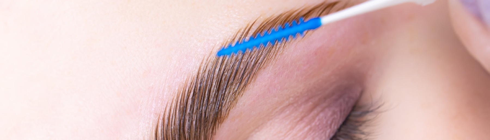
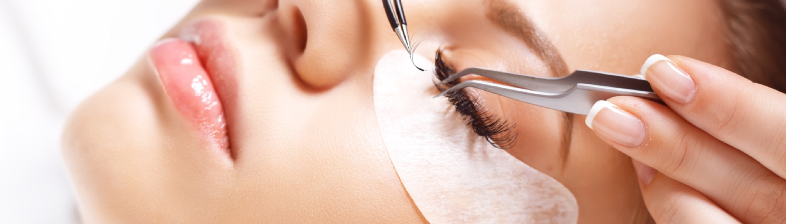
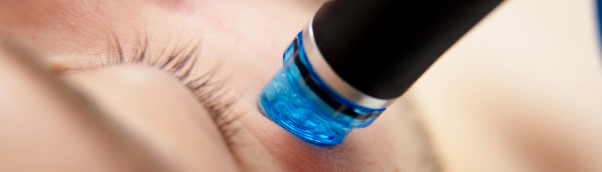
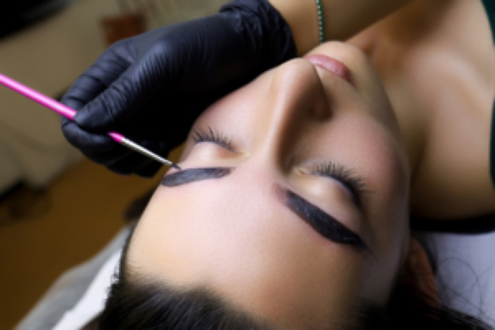
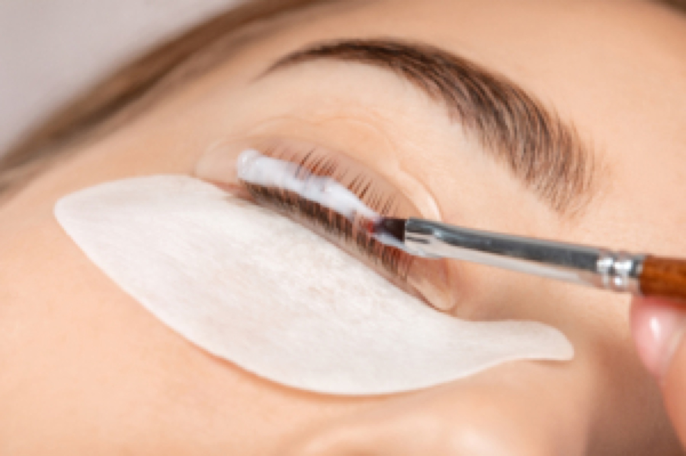
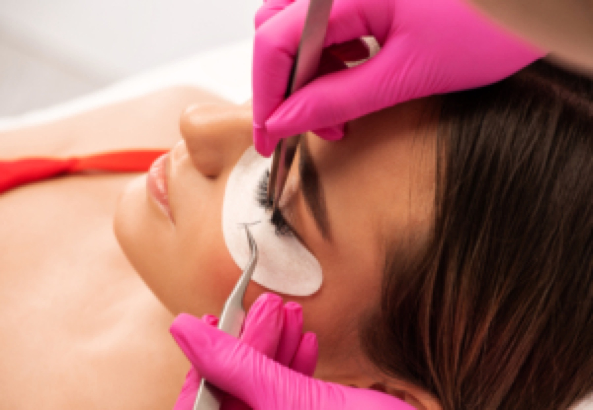
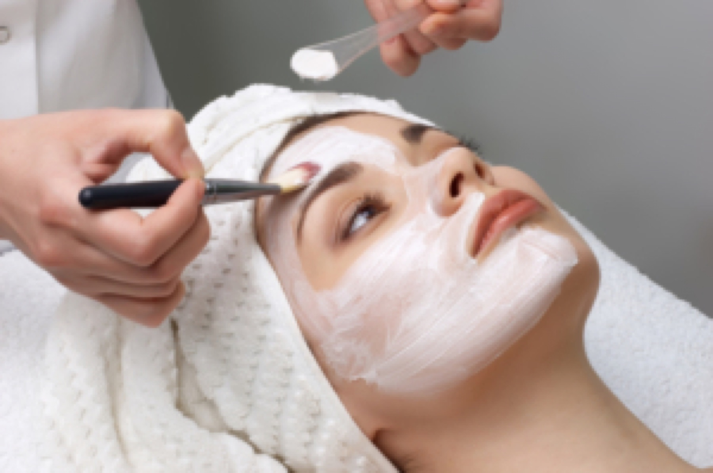

Starker Blick.Klare Kante.
Wimpern, Brauen und Gesichtsbehandlungen bei Nina Cosmetics, Home Studio am Fuhlsbüttler Damm in Hamburg.
Termin per WhatsApp
Dein Gesicht ist einzigartig
Ich habe mich darauf spezialisiert, deine natürliche Schönheit gezielt zu unterstreichen und dich zum Strahlen zu bringen.
01Wimpern
Schöne, gepflegte Wimpern verleihen deinem Blick Ausdruck und Eleganz. Mit einer professionellen Wimpernverlängerung oder einem Wimpernlifting erhältst du einen dauerhaft perfekten Augenaufschlag – individuell auf deine Wünsche abgestimmt und mit einem natürlichen, harmonischen Ergebnis.

02Gesichtsbehandlung
Gönn dir eine wohltuende Auszeit und schenke deiner Haut die Aufmerksamkeit, die sie verdient. Meine Gesichtsbehandlungen reinigen sanft, versorgen deine Haut mit wertvollen Wirkstoffen und bringen sie zum Strahlen. Jede Behandlung wird individuell auf deine Bedürfnisse abgestimmt – für ein frisches, ebenmäßiges Hautbild und ein rundum gepflegtes Gefühl.

03Augenbrauen
Schön geformte Augenbrauen verleihen deinem Gesicht Ausdruck und Harmonie. Mit professionellem Styling – ob zupfen, färben oder in Form bringen – betonen wir deine natürliche Schönheit und heben deine Augenpartie optimal hervor. Für einen gepflegten Look, der deinen individuellen Typ unterstreicht.

Vier Gründe für deinen Termin
Zeit nehmen
Eine schöne Wimpernverlängerung entsteht nicht unter Zeitdruck. Du bekommst die Zeit, die deine Behandlung braucht.
Individuelle Looks
Jede Behandlung wird auf dein Gesicht und deine Wünsche abgestimmt, von natürlich bis ausdrucksstark.
Home-Studio-Ruhe
Ein privates Studio in Hamburg-Fuhlsbüttel: kein Trubel, kein Wartezimmer, nur du und deine Behandlung.
Sauber gearbeitet
Ein gepflegter Arbeitsplatz und sorgfältiges Arbeiten gehören für mich selbstverständlich dazu.
Über Sabrina Müller
Leidenschaft für Schönheit und ein geschultes Auge fürs Detail.
Mit Leidenschaft für Schönheit und einem geschulten Auge fürs Detail begleite ich dich professionell auf dem Weg zu deinem ganz persönlichen Wohlfühl-Look. Buche diese perfekte Abrundung meiner Leistungen und gönn dir diesen besonderen Luxus.
Mein Studio liegt bei mir zu Hause in Hamburg-Fuhlsbüttel. Hier arbeite ich ruhig und konzentriert, ganz auf dich abgestimmt.

Ablauf deines Termins
Ankommen und Wunsch klären
Du kommst in Ruhe an, wir besprechen, was du dir vorstellst, und wählen gemeinsam den Look, der zu dir passt.
Behandlung
Du liegst bequem, ich arbeite konzentriert und in deinem Tempo.
Pflegetipps zum Mitnehmen
Ich erkläre dir, wie du dein Ergebnis zu Hause pflegst, damit du lange Freude daran hast.
Einblicke in die Behandlungen


Das sagen meine Kundinnen
„Ich habe mich vom ersten Moment an wohlgefühlt. Sabrina nimmt sich Zeit, und die Wimpern sehen genau so aus, wie ich es mir gewünscht habe.“Lena K.
„Die Gesichtsbehandlung war eine echte Auszeit. Meine Haut fühlte sich danach frisch und weich an.“Marie T.
„Ruhige Atmosphäre, ehrliche Beratung und ein Ergebnis, das ich jeden Morgen im Spiegel mag.“Jana S.
Gut vorbereitet zum Termin
Wie bereite ich mich auf meinen Termin vor?
Komm bitte ungeschminkt im Augenbereich und ohne Wimperntusche. Wenn du Kontaktlinsen trägst, nimm gern eine Brille mit. Bei Fragen zur Vorbereitung schreibst du mir einfach kurz per WhatsApp.
Wie lange dauert eine Behandlung?
Das hängt von der Behandlung und deinem Wunschlook ab. Bei der Terminvereinbarung sage ich dir, wie viel Zeit wir einplanen. Qualität braucht Zeit, und die bekommst du bei mir.
Wie pflege ich mein Ergebnis zu Hause?
Nach dem Termin bekommst du von mir persönliche Pflegetipps. Grundsätzlich gilt: sanft mit den Wimpern und Brauen umgehen und nicht daran zupfen oder reiben.
Was gilt, wenn ich einen Termin absagen muss?
Gib mir bitte so früh wie möglich Bescheid, am einfachsten per WhatsApp oder Anruf. Dann kann ich den Termin neu vergeben, und wir finden gemeinsam einen neuen Zeitpunkt für dich. Die genauen Bedingungen stehen in den AGB.